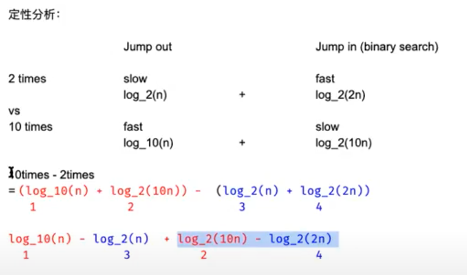

Binary Search
2 Principles:
- Guarantee that the search space decreases over time (after each iteration). // prevent while "true"
- Guarantee that the target (if exist) cannot be ruled out accidentally, when we change the value of Left or Right.
while (l <= r): 1 element cannot get in
while (l < r): 1 element cannot get in
l = l + 1: eleminate l for next iteration
l = l: check if 1 element will cause inf
2D Space Binary Search
1 3 4 6
7 9 10 11
14 17 19 20
target = 11
index = col * row - 1
col = index / size of col
row = index % size of row
Closest Element to Target
target == 4
[1,2,3,8,9] -> return 3's index which is 2
First target
target = 5
[4,5,5,5,5,5] -> return 1 (first occurance of 5 index)
Last target (variant for previous one)
target = 5
[4,5,5,5,5,5] -> return 1 (first occurance of 5 index)
Closest k Elements
how to return the index of k elements that are closest elements to the target
k = 3, target = 5, a = [1,2,3,8,9]
return 2,3,8
Solution 1:
- run binary search to find L and R.
- if l is close to target, l--; else r++
Complexity: O(log(n) + k)
Solution 2:
- binary search to find L and R
- using offset to form two more arrays:
leftArray = {3 2 1} rightArray = {4 5}
then use the method introduced later to find the median. Don't need to preprocess the offset beforehand, but just to update when visited.
Solution 3:
Moving the sliding window to get the least sum diff. To get the minimal, it has to be the mid point of the sliding window.
case 1: x - A[mid] < A[mid + k] - x, need to move window go left
-------x----A[mid]-----------------A[mid + k]----------
case 2: x - A[mid] < A[mid + k] - x, need to move window go left again
-------A[mid]----x-----------------A[mid + k]----------
case 3: x - A[mid] > A[mid + k] - x, need to move window go right
-------A[mid]------------------x---A[mid + k]----------
case 4: x - A[mid] > A[mid + k] - x, need to move window go right
-------A[mid]---------------------A[mid + k]----x------
Smallest element that is greater than target
sss eee bbb -> same as first target, because we want to find the first b
case 1: if input[m] < target:
l = m + 1 // l = m also work
case 2: if input[m] == target:
l = m + 1 // l = m also work
case 3: if input[m] > target:
r = m // r = m - 1 is wrong, becasue it will wipe out the first b
Kth smallest in two sorted arrays
- how to find the median
- how to find k-th smallest element from them
A[] = {2,5,7,10,13}
B[] = {1,3,4,13,20,29}
k = 5
output = 5
solution 1: two pointer, i++ if a[i] < b[j] else j++, stop until k steps -> O(k)
solution 2: binary search

Binary Search with Unknown Size
dict = {1 3 5 6 .... 1000000}, target = 9999
Assumption:
- No dict.size()
- if dict.get(index) == null, then we know the size of dict is < index.
solution 1:
- keep jumping out with size = size * 2. until dict.get(index) == null
- do binary search from 0 to current size
Followup:
Why not size = size * 10? Which one is better?
Don't say an answer (if you don't know yet), but say let's analyze together.
